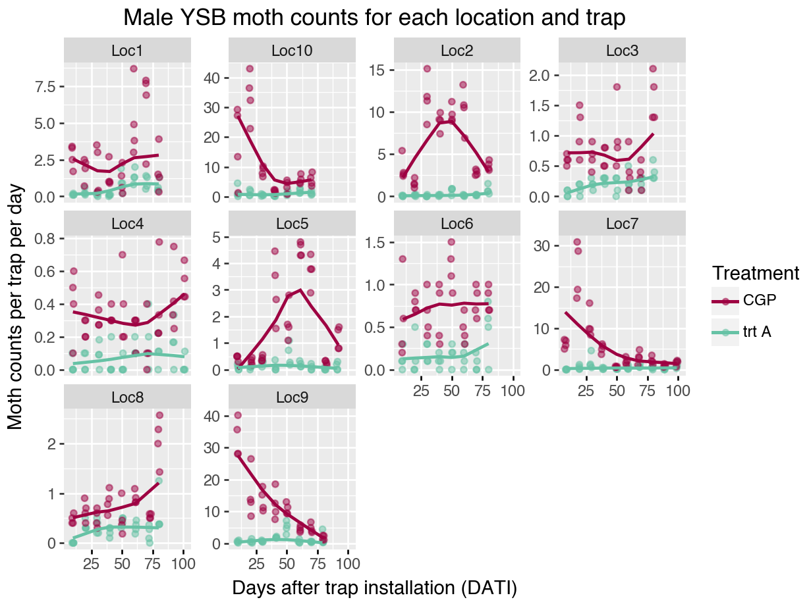
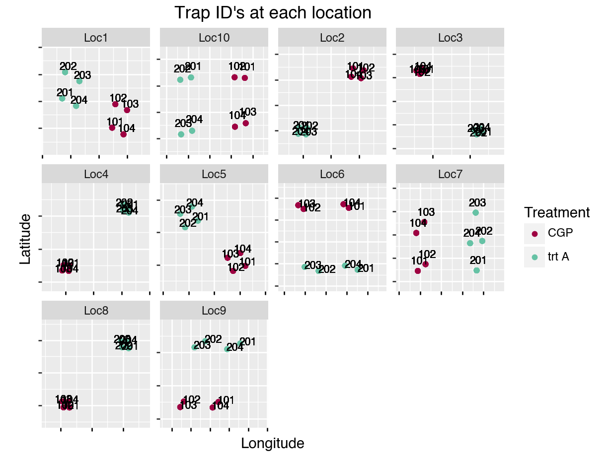
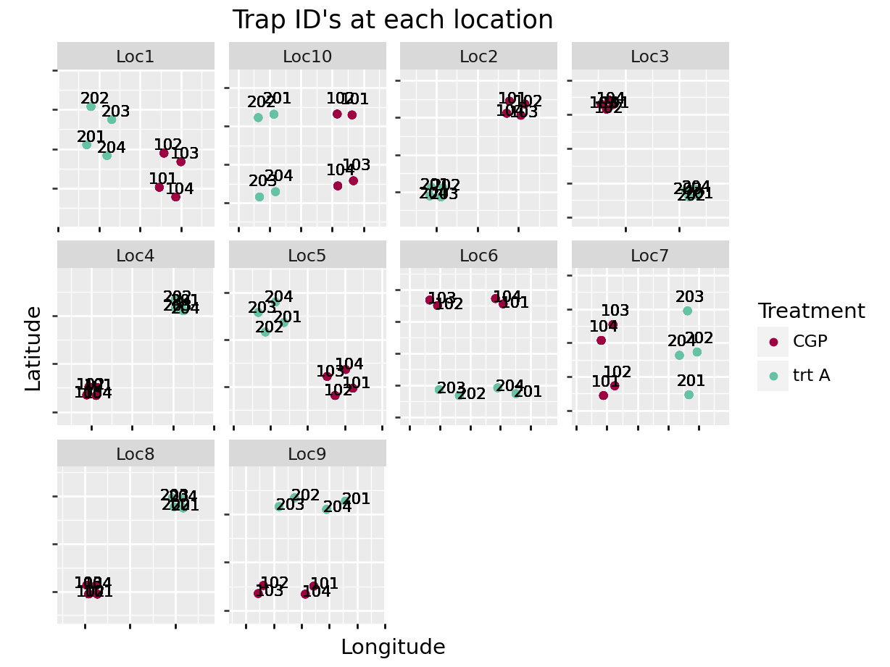
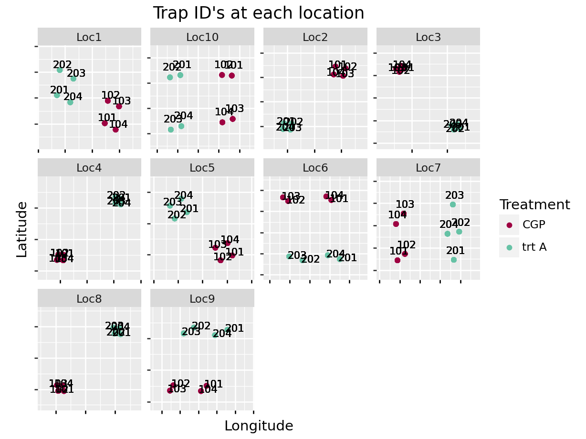
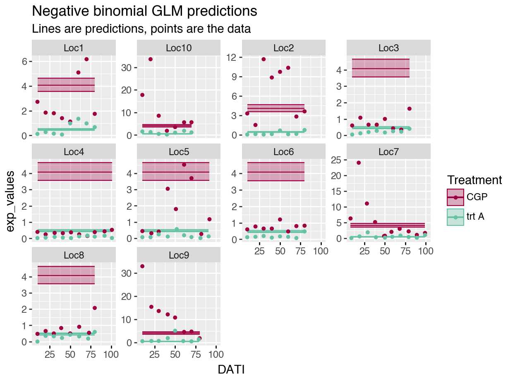
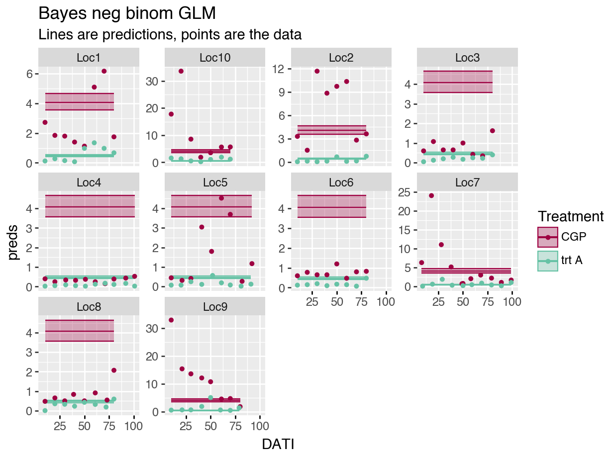
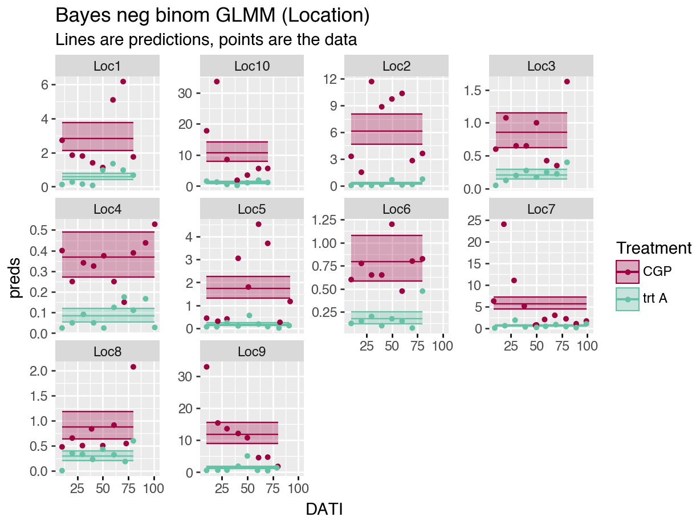
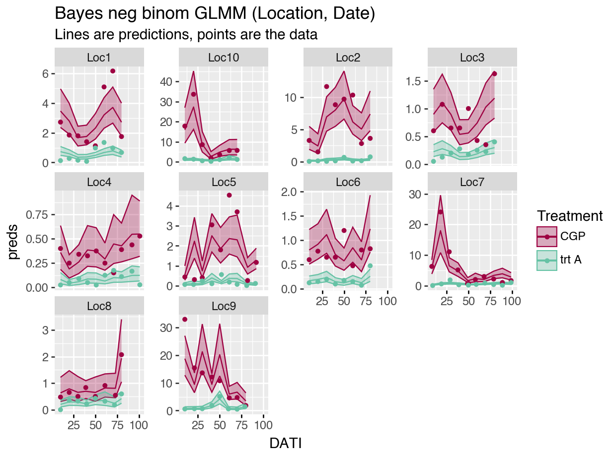

Chapter 3 GLMM’s in Python
3.1 Getting started with Python
Python is a lot more complicated than R!
Download Python.
Decide how you want to interact with Python. Yes, you can technically use the terminal and use Python directly, but a GUI is preferable so that it is easier to run the code, add comments, view the output, etc. This is even more true for Python than it is for R.
Originally, I downloaded Jupyter Notebook directly, but I didn’t like the way things loaded. So, I downloaded “Anaconda” and then accessed Jupyter from there. However, I still don’t love Jupyter– the notebooks don’t optimize the screen’s size like RStudio does. In RStudio, I love having my code on one side of the screen, and my outputs on the other. Screens are wide, not long.
Soon, I came across the “reticulate” package, which allows for Python coding in an Rmarkdown script! So far, awesome and it is how I run the all the analyses. Here, I switch between R and Python code chunks, but the package also allows objects to be used within both languages. Pretty cool.
To interact with Python via RMarkdowns in RStudio, check out the “reticulate” package website to get started:
R Markdown Python Engine (aka the “reticulate” package): https://rstudio.github.io/reticulate/articles/r_markdown.html
- Set up a Python environment for your work. Here is why that is important:
Python environments: “When installing Python packages it’s best practice to isolate them within a Python environment (a named Python installation that exists for a specific project or purpose). This provides a measure of isolation, so that updating a Python package for one project doesn’t impact other projects. The risk for package incompatibilities is significantly higher with Python packages than it is with R packages, because unlike CRAN, PyPI does not enforce, or even check, if the current versions of packages currently available are compatible.” https://rstudio.github.io/reticulate/articles/python_packages.html
(Anaconda and reticulate both help the user keep specific environments for each Python “project” that one may be working on.)
Here is another helpful link:
Primer on Python for R users: https://rstudio.github.io/reticulate/articles/python_primer.html
## virtualenv: r-reticulate-BayesInPython3.2 Set up
When completing an analysis, I may skip around in my script quite a bit. Therefore, I like all packages loaded, and all data uploaded and manipulated at the start of my script.
3.3 Outline
Introduce the data to be used throughout the tutorial.
Fit generalized linear models (GLMs, here Poisson and negative binomial regressions). Models are fit in both frequentist and Bayesian frameworks to lay the groundwork for the more complicated models.
Fit generalized linear models with random effects (GLMMs) to allow for correlations in space and time. Models are fit in both frequentist and Bayesian frameworks.
3.4 Data Exploration
3.4.1 Moth counts
Here is what the data look like. Columns: Location, Treatment, TrapID, Longitude, Latitude, AssessmentNumber, and SamplingDate should be self-explanatory… TransplantDate is the date that the rice seedlings were transplanted into the field; DispInstallDate is the treatment installation date; TrapInstallDate is the trap installation date; “nYSB” are the moth counts (number of YSB moths); DaysOfCatch is the number of days since the trap was previously sampled or the number of days since trap installation if it is assessment number 1; DATI is days after trap installation; DADI is days after dispenser installation; and DAT is days after transplant. Some of these columns will be discussed more later.
## <class 'pandas.core.frame.DataFrame'>
## RangeIndex: 672 entries, 0 to 671
## Data columns (total 18 columns):
## # Column Non-Null Count Dtype
## --- ------ -------------- -----
## 0 Location 672 non-null object
## 1 Treatment 672 non-null object
## 2 TrapID 672 non-null int64
## 3 Longitude 672 non-null float64
## 4 Latitude 672 non-null float64
## 5 TransplantDate 672 non-null datetime64[ns]
## 6 TrapInstallDate 672 non-null datetime64[ns]
## 7 DispInstallDate 440 non-null datetime64[ns]
## 8 AssessmentNumber 672 non-null int64
## 9 SamplingDate 672 non-null datetime64[ns]
## 10 nYSB 672 non-null int64
## 11 DaysOfCatch 672 non-null int64
## 12 DATI 672 non-null int64
## 13 DADI 440 non-null float64
## 14 DAT 672 non-null int64
## 15 SamplingDateC 672 non-null object
## 16 mothsperday 672 non-null float64
## 17 numericDate 672 non-null int32
## dtypes: datetime64[ns](4), float64(4), int32(1), int64(6), object(3)
## memory usage: 92.0+ KB## Location Treatment TrapID Longitude Latitude \
## count 672 672 672.000000 672.000000 672.000000
## unique 10 2 NaN NaN NaN
## top Loc7 trt A NaN NaN NaN
## freq 80 336 NaN NaN NaN
## mean NaN NaN 152.500000 108.684570 -6.895572
## min NaN NaN 101.000000 106.451339 -7.421778
## 50% NaN NaN 152.500000 107.809442 -6.876379
## max NaN NaN 204.000000 111.621353 -6.178671
## std NaN NaN 50.049752 2.101653 0.417043
##
## TransplantDate TrapInstallDate \
## count 672 672
## unique NaN NaN
## top NaN NaN
## freq NaN NaN
## mean 2023-08-16 01:25:42.857142784 2023-08-20 08:34:17.142857216
## min 2023-07-24 00:00:00 2023-08-04 00:00:00
## 50% 2023-08-12 00:00:00 2023-08-17 00:00:00
## max 2023-09-09 00:00:00 2023-09-10 00:00:00
## std NaN NaN
##
## DispInstallDate AssessmentNumber \
## count 440 672.000000
## unique NaN NaN
## top NaN NaN
## freq NaN NaN
## mean 2023-08-20 04:34:54.545454592 4.750000
## min 2023-08-04 00:00:00 1.000000
## 50% 2023-08-16 00:00:00 5.000000
## max 2023-09-10 00:00:00 10.000000
## std NaN 2.498882
##
## SamplingDate nYSB DaysOfCatch DATI \
## count 672 672.000000 672.000000 672.000000
## unique NaN NaN NaN NaN
## top NaN NaN NaN NaN
## freq NaN NaN NaN NaN
## mean 2023-10-06 23:02:08.571428608 22.558036 10.011905 47.602679
## min 2023-08-14 00:00:00 0.000000 7.000000 8.000000
## 50% 2023-10-06 00:00:00 5.000000 10.000000 50.000000
## max 2023-11-24 00:00:00 429.000000 12.000000 101.000000
## std NaN 51.304964 0.670770 25.120304
##
## DADI DAT SamplingDateC mothsperday numericDate
## count 440.000000 672.000000 672 672.000000 672.000000
## unique NaN NaN 62 NaN NaN
## top NaN NaN 2023-10-25 NaN NaN
## freq NaN NaN 32 NaN NaN
## mean 48.038636 51.900298 NaN 2.266169 54.959821
## min 10.000000 11.000000 NaN 0.000000 1.000000
## 50% 50.000000 52.000000 NaN 0.500000 54.000000
## max 101.000000 114.000000 NaN 42.900000 103.000000
## std 25.332340 25.695521 NaN 5.118438 26.312575## Location
## ['Loc9' 'Loc10' 'Loc7' 'Loc2' 'Loc1' 'Loc4' 'Loc5' 'Loc3' 'Loc6' 'Loc8']
## Treatment
## ['trt A' 'CGP']
## SamplingDateC
## ['2023-08-23' '2023-09-03' '2023-09-12' '2023-09-23' '2023-10-02'
## '2023-10-12' '2023-10-22' '2023-10-31' '2023-08-25' '2023-09-05'
## '2023-09-14' '2023-09-25' '2023-10-04' '2023-10-15' '2023-10-24'
## '2023-11-03' '2023-09-20' '2023-09-30' '2023-10-10' '2023-10-20'
## '2023-10-30' '2023-11-10' '2023-11-19' '2023-09-18' '2023-09-28'
## '2023-10-08' '2023-10-18' '2023-10-28' '2023-11-08' '2023-11-17'
## '2023-08-26' '2023-09-15' '2023-10-06' '2023-10-25' '2023-11-04'
## '2023-11-14' '2023-11-24' '2023-09-04' '2023-09-24' '2023-10-05'
## '2023-10-14' '2023-08-21' '2023-08-31' '2023-09-10' '2023-08-16'
## '2023-09-06' '2023-09-16' '2023-09-26' '2023-10-16' '2023-11-06'
## '2023-11-15' '2023-08-14' '2023-08-24' '2023-10-13' '2023-11-09'
## '2023-10-27' '2023-11-07' '2023-09-07' '2023-09-17' '2023-09-27'
## '2023-10-17' '2023-11-16']The data are the moth counts collected at each trap (average per day), within each location and throughout the season. Note how the y-axis changes for each plot in the figure.

3.4.2 Trap locations
Trial locations in relation to each other. Some trial locations are closer to each other than others.
Within each location, the treatment traps have a slightly different alignment:
## Location Treatment TrapID Latitude Longitude
## count 80 80 80.000000 80.000000 80.000000
## unique 10 2 NaN NaN NaN
## top Loc9 trt A NaN NaN NaN
## freq 8 40 NaN NaN NaN
## mean NaN NaN 152.500000 -6.889628 108.712946
## std NaN NaN 50.328038 0.421575 2.140024
## min NaN NaN 101.000000 -7.421778 106.451339
## 25% NaN NaN 102.750000 -7.236472 106.653911
## 50% NaN NaN 152.500000 -6.908913 107.599716
## 75% NaN NaN 202.250000 -6.740433 110.999457
## max NaN NaN 204.000000 -6.178671 111.621353

3.5 Basic GLM models
To start, we ignore all the spatial and temporal relationships in the data and assume each data point is independent and identically distributed (iid). This is not a good model for the data! It is just our starting off point.
When building hierarchical Bayesian models, it is always a good idea to start simple, make sure everything works as expected, and then build up.
3.5.1 Mathematical model
Our response variable is a count, therefore we use either a Poisson or negative binomial distribution as the basis for our model. These models are known as generalized linear models (GLMs).
The model must also include an offset to account for the varying time intervals between sample. (If the traps are left unchecked for more days, we naturally expect the trap to have more moths. This varying effort is accounted for by the offset.)
3.5.1.1 Poisson regression model
We start with a poisson version of our regression model:
\[ y_i \sim Pois(\lambda_i) \\ log(\lambda_i ) = \beta_0 + \beta_1 x_{A,i} + \mbox{ln} \left(DaysOfCatch_i\right) \]
where, for data samples \(i = 1, ..., N\),
\(y_i\) is moth count \(i\),
\(\lambda_i\) is the expected moth count for sample \(i\),
\(\beta_0\) is the intercept of the model. Here, it is the basis for the expected moth count for our control treatment.
\(\beta_1\) is the expected difference in moth counts between the control group and the treatment A group,
\(x_{i}\) is an indicator variable that equals 1 if sample \(i\) is from a treatment A field and equals 0 otherwise, and
\(\left(DaysOfCatch_i\right)\) is the offset to account for the varying time interval between samples. This is necessary because with a longer time interval, more moths will fly into the trap.
3.5.1.2 Negative binomial regression model
In ecology, there is always additional variability in our data than what the Poisson distribution allows. To account for the additional variability in our model, we switch to a negative binomial distribution:
\[ y_i \sim NegBinom(\lambda_i, \phi) \\ log(\lambda_i ) = \beta_0 + \beta_1 x_{i} + \mbox{ln} \left(DaysOfCatch_i\right) \]
“Negative binomial regression is used to model count data for which the variance is higher than the mean.” (https://www.pymc.io/projects/examples/en/latest/generalized_linear_models/GLM-negative-binomial-regression.html)
For the negative binomial regression, all variables and parameters are defined as before, but the model has an additional parameter, \(\phi\), that allows for the additional variation. The negative binomial distribution and regression model can be written in many ways. In our models, \(\phi\) is defined through the following formula where the variance associated with an expected moth count, \(\lambda\), is:
\[ Var(\lambda) = \lambda + \phi \cdot\lambda^2 \]
(For a Poisson distribution, \(Var(\lambda) = \lambda\).)
3.5.1.3 Bayesian mathematical model
I also fit these models using a Bayesian framework, again to build our foundation for the more complex models that come later.
For the Bayesian models, I only show the more complex negative binomial version.
To make our models Bayesian, we add priors to our parameters:
\[ y_i \sim NegBinom(\lambda_i, \phi) \\ log(\lambda_i ) = \beta_0 + \beta_1 x_{A,i} + \mbox{ln} \left(DaysOfCatch_i\right) \\ \beta_0 \sim Normal(0, 2) \\ \beta_1 \sim Normal(0, 2) \\ \phi \sim HalfCauchy(0,1) \]
The models use slightly informative priors. When working on a log-scale (e.g., with Poisson or negative binomial distributions), this often becomes essential to avoid parameter estimates on the boundaries. (See Hooten and Hobbs for a good discussion on this issue.)
3.5.1.4 Trapping reduction defined
The primary metric of interest from these models is a derived parameter that we call trapping reduction (TR):
\[ TR = 100 - 100 e ^{(-\beta_1)} \]
To obtain a 95% confidence interval for TR (for the frequentist version of our model), we use the following approximation:
\[ TR = 100 - 100 e ^{(-\beta_1 \pm 2 \cdot SE(\beta_1))} \]
For the Bayesian version, the derived parameter is sampled as part of the MCMC iterations, and the 95% credible interval is the 2.5%, 97.5% quantiles of its resulting distribution.
3.5.2 Fitting the frequentist models
Note: when I predict for new data, I set DaysOfCatch = 1, and then I compare to the moths per day variable (mothsperday = nYSB / DaysOfCatch). I want to exclude any patterns related to the varying time intervals.
These models show a very tight confidence intervals for our predictions. But also, the residual deviance is MUCH greater than the degree of freedom, indicating a lack of fit. The plot of the predictions overlaid on the data also demonstrate the lack of fit.
These models are fit using the ‘statsmodels’ module because of its parallel syntax to R.
## Generalized Linear Model Regression Results
## ==============================================================================
## Dep. Variable: nYSB No. Observations: 672
## Model: GLM Df Residuals: 670
## Model Family: Poisson Df Model: 1
## Link Function: Log Scale: 1.0000
## Method: IRLS Log-Likelihood: -14034.
## Date: Thu, 22 May 2025 Deviance: 25678.
## Time: 13:29:42 Pearson chi2: 4.24e+04
## No. Iterations: 6 Pseudo R-squ. (CS): 1.000
## Covariance Type: nonrobust
## ======================================================================================
## coef std err z P>|z| [0.025 0.975]
## --------------------------------------------------------------------------------------
## Intercept 1.3960 0.009 162.829 0.000 1.379 1.413
## Treatment[T.trt A] -2.1665 0.027 -80.933 0.000 -2.219 -2.114
## ======================================================================================## TR lowerCI upperCI
## 0 100 100 100## predicted se ci_lower ci_upper
## count 672.000000 672.000000 672.000000 672.000000
## mean 0.312790 0.016966 0.279536 0.346043
## std 1.084062 0.008399 1.100524 1.067600
## min -0.770465 0.008574 -0.820168 -0.720762
## 25% -0.770465 0.008574 -0.820168 -0.720762
## 50% 0.312790 0.016966 0.279536 0.346043
## 75% 1.396045 0.025359 1.379241 1.412849
## max 1.396045 0.025359 1.379241 1.412849
The model is such a bad fit to the data, it is hard to even tell what is going on in the plot above.
For the negative binomial model, our confidence intervals are a little wider, but we are still ignoring all the correlations in our data. And the plot of the predictions again indicates the lack of fit.
## Optimization terminated successfully.
## Current function value: 3.629123
## Iterations: 10
## Function evaluations: 11
## Gradient evaluations: 11## NegativeBinomial Regression Results
## ==============================================================================
## Dep. Variable: nYSB No. Observations: 672
## Model: NegativeBinomial Df Residuals: 670
## Method: MLE Df Model: 1
## Date: Thu, 22 May 2025 Pseudo R-squ.: 0.06445
## Time: 13:29:49 Log-Likelihood: -2438.8
## converged: True LL-Null: -2606.8
## Covariance Type: nonrobust LLR p-value: 4.739e-75
## ======================================================================================
## coef std err z P>|z| [0.025 0.975]
## --------------------------------------------------------------------------------------
## Intercept 1.4023 0.068 20.651 0.000 1.269 1.535
## Treatment[T.trt A] -2.1636 0.099 -21.863 0.000 -2.358 -1.970
## alpha 1.5244 0.082 18.628 0.000 1.364 1.685
## ======================================================================================## TR lowerCI upperCI
## 0 100 100 100## predicted se ci_lower ci_upper
## count 672.000000 672.000000 672.000000 672.000000
## mean 0.320438 0.069947 0.183344 0.457531
## std 1.082628 0.002045 1.086637 1.078620
## min -0.761384 0.067903 -0.902484 -0.620285
## 25% -0.761384 0.067903 -0.902484 -0.620285
## 50% 0.320438 0.069947 0.183344 0.457531
## 75% 1.402260 0.071991 1.269172 1.535348
## max 1.402260 0.071991 1.269172 1.535348

3.5.3 Bayesian (bambi) models– Python
“Bambi” is the Python module that is very similar to “brms” package in R. I’m pretty sure the defaults use different algorithms though (which may affect your results), so be sure to read up on the details of both!
Because the models take a few minutes to fit, I usually fit them when I am initially running through my code, save them, and then only load the model fit when rendering the Rmarkdown file and creating the resulting figures.
The prior_summary command is helpful if you do not know what a parameter is called in ‘brms’. Here, I used the command to find out what they called their \(\phi\) parameter. (They call it the shape parameter.)
“Bambi” created InferenceData objects. Read the reference guide– it is very helpful! https://python.arviz.org/en/latest/getting_started/WorkingWithInferenceData.html#

## mean sd hdi_3% hdi_97% mcse_mean mcse_sd ess_bulk \
## alpha 0.656 0.035 0.588 0.721 0.000 0.000 17917.0
## Intercept 1.402 0.067 1.276 1.530 0.000 0.001 18638.0
## Treatment[trt A] -2.159 0.099 -2.343 -1.974 0.001 0.001 17245.0
##
## ess_tail r_hat
## alpha 8766.0 1.0
## Intercept 9286.0 1.0
## Treatment[trt A] 10039.0 1.0## 0.025 86.0
## 0.500 88.0
## 0.975 90.0
## Name: trtA, dtype: float64<xarray.Dataset> Size: 65MB
Dimensions: (chain: 6, draw: 2000, Treatment_dim: 1, __obs__: 672)
Coordinates:
* chain (chain) int64 48B 0 1 2 3 4 5
* draw (draw) int64 16kB 0 1 2 3 4 5 ... 1995 1996 1997 1998 1999
* Treatment_dim (Treatment_dim) <U5 20B 'trt A'
* __obs__ (__obs__) int64 5kB 0 1 2 3 4 5 6 ... 666 667 668 669 670 671
Data variables:
alpha (chain, draw) float64 96kB 0.6959 0.6361 ... 0.6491 0.691
Intercept (chain, draw) float64 96kB 1.245 1.477 1.368 ... 1.411 1.401
Treatment (chain, draw, Treatment_dim) float64 96kB -2.08 ... -2.131
mu (chain, draw, __obs__) float64 65MB 0.4342 0.4342 ... 4.058
Attributes:
created_at: 2025-05-21T19:44:29.234456+00:00
arviz_version: 0.21.0
inference_library: pymc
inference_library_version: 5.22.0
sampling_time: 17.945131063461304
tuning_steps: 500
modeling_interface: bambi
modeling_interface_version: 0.15.0## TrapID Longitude Latitude TransplantDate \
## count 672.000000 672.000000 672.000000 672
## mean 152.500000 108.684570 -6.895572 2023-08-16 01:25:42.857142784
## min 101.000000 106.451339 -7.421778 2023-07-24 00:00:00
## 25% 102.750000 106.653911 -7.242430 2023-08-06 00:00:00
## 50% 152.500000 107.809442 -6.876379 2023-08-12 00:00:00
## 75% 202.250000 110.998138 -6.740433 2023-08-26 00:00:00
## max 204.000000 111.621353 -6.178671 2023-09-09 00:00:00
## std 50.049752 2.101653 0.417043 NaN
##
## TrapInstallDate DispInstallDate \
## count 672 440
## mean 2023-08-20 08:34:17.142857216 2023-08-20 04:34:54.545454592
## min 2023-08-04 00:00:00 2023-08-04 00:00:00
## 25% 2023-08-11 00:00:00 2023-08-11 00:00:00
## 50% 2023-08-17 00:00:00 2023-08-16 00:00:00
## 75% 2023-08-31 00:00:00 2023-08-31 00:00:00
## max 2023-09-10 00:00:00 2023-09-10 00:00:00
## std NaN NaN
##
## AssessmentNumber SamplingDate nYSB \
## count 672.000000 672 672.000000
## mean 4.750000 2023-10-06 23:02:08.571428608 22.558036
## min 1.000000 2023-08-14 00:00:00 0.000000
## 25% 3.000000 2023-09-15 18:00:00 2.000000
## 50% 5.000000 2023-10-06 00:00:00 5.000000
## 75% 7.000000 2023-10-28 00:00:00 17.000000
## max 10.000000 2023-11-24 00:00:00 429.000000
## std 2.498882 NaN 51.304964
##
## DaysOfCatch DATI DADI DAT mothsperday \
## count 672.0 672.000000 440.000000 672.000000 672.000000
## mean 1.0 47.602679 48.038636 51.900298 2.266169
## min 1.0 8.000000 10.000000 11.000000 0.000000
## 25% 1.0 29.750000 30.000000 31.000000 0.200000
## 50% 1.0 50.000000 50.000000 52.000000 0.500000
## 75% 1.0 70.000000 70.000000 73.000000 1.706818
## max 1.0 101.000000 101.000000 114.000000 42.900000
## std 0.0 25.120304 25.332340 25.695521 5.118438
##
## numericDate exp_values lowerCI upperCI preds
## count 672.000000 672.000000 672.000000 672.000000 672.000000
## mean 54.959821 2.265697 1.984167 2.597330 2.270442
## min 1.000000 0.467019 0.407712 0.540182 0.470203
## 25% 33.750000 0.467019 0.407712 0.540182 0.470203
## 50% 54.000000 2.265697 1.984167 2.597330 2.270442
## 75% 76.000000 4.064375 3.560621 4.654479 4.070682
## max 103.000000 4.064375 3.560621 4.654479 4.070682
## std 26.312575 1.800018 1.577629 2.058681 1.801580
The Bayesian parameter estimates match very closely to the frequentist estimates. This is expected, but reassuring that we have built the correct foundation for the more complicated models to come. The first summary output is from the Bayesian model; the second is from the frequentist fit. (Note that in the fequentitst fit, they summarize the inverse shape parameter compared to the bambi fit.)
Comparisons of TR predictions and predicted moth count values can be found at the end of the page.
3.5.4 Bayesian (PyMC) models– Python
For most needs, the “bambi” module should suffice. However, when I want to build my complicated non-linear function with multi-dimensional Gaussian Processes, I am going to need a more foundational module– PyMC. Therefore, I will also build all models using this module. Learning PyMC will also help with extracting derived parameters and predictions, etc. from bambi
## mean sd hdi_3% hdi_97% mcse_mean mcse_sd \
## beta[Intercept] 1.402 0.067 1.279 1.532 0.001 0.001
## beta[C(Treatment)[trt A]] -2.160 0.099 -2.348 -1.981 0.002 0.001
## alpha 0.655 0.035 0.591 0.720 0.001 0.001
## TR 88.406 1.141 86.308 90.527 0.024 0.017
##
## ess_bulk ess_tail r_hat
## beta[Intercept] 2275.0 2726.0 1.0
## beta[C(Treatment)[trt A]] 2184.0 2559.0 1.0
## alpha 3165.0 2350.0 1.0
## TR 2184.0 2559.0 1.0## mean sd hdi_3% hdi_97% mcse_mean mcse_sd ess_bulk ess_tail \
## TR 88.406 1.141 86.308 90.527 0.024 0.017 2184.0 2559.0
##
## r_hat
## TR 1.0
3.6 GLMM: Random effect (RE) for locations
The first fix we make to the model is acknowledging that overall average moth pressure varies from location to location (see Fig 1 of moth counts). To make this fix, we add a location random effect (RE) and our model becomes a generalized linear mixed-effects model (GLMM or GLMER).
We also want to acknowledge that the treatment effect may vary from location to location– sometimes we see a big difference in moth counts between control and treatment fields, and sometimes the difference is smaller. For inference though, we are only interested in the larger picture, which is the overall trapping reduction. (We are not interested in what happens at these exact locations per se, we are more interested in the average treatment effect.) Therefore, we also add a treatment random effect.
Because dates will have different affect at different location (partially due to different planting dates), they are nested and not crossed.
(Should date be planting date and not sampling date? )
3.6.1 GLMM mathematical model
I only show the Poisson version of the model, the NB version is a straightforward extension.
\[ y_{ik} \sim Pois(\lambda_{ik}) \\ log(\lambda_{ik} ) = \beta_0 + \beta_1 x_{A,i} + \gamma_{0k} x_{ik} + \gamma_{1k} x_{i} x_{ik} + \mbox{ln} \left(DaysOfCatch_i\right) \\ \gamma_{0k} \sim Normal(0, \sigma^2_{0}) \\ \gamma_{1k} \sim Normal(0, \sigma^2_{1}) \\ \]
where, in addition to the variables and parameters defined for the GLM, we have
\(k = 1,..., K=10\) represents the locations,
\(y_{ik}\) is moth count \(i\) from location \(k\),
\(\lambda_{ik}\) is the expected moth count for sample \(i\) from location \(k\),
\(\beta_0\) is the expected moth count for our control treatment for a new location,
\(\beta_1\) is the expected difference in moth counts between the control group and the treatment A group for a new location,
\(\gamma_{0k}\) is the random intercept associated with location \(k\), which leads to different background moth pressures at each location. All \(\gamma_{0k}\) come from an iid Normal distribution.
\(\gamma_{1k}\) is the random slope associated with location \(k\), which leads to different treatment effects at each location. All \(\gamma_{1k}\) come from an iid Normal distribution, and
\(x_{ik}\) is an indicator variable that equals 1 if moth count \(i\) is associated with location \(k\) and 0 otherwise.
OK, technically I should be introducing matrices here because \(k = 1,..., K=10\) locations, so we need a new indicator variable for each location, but I’m going to be lazy and write it like this for now.
3.6.1.1 Bayesian GLMM
Here is the same model with a Bayesian framework and using a negative binomial regression:
To make our models Bayesian, we add priors to our parameters:
\[ y_{ik}\sim NegBinom(\lambda_{ik}, \phi) \\ log(\lambda_{ik} ) = \beta_0 + \beta_1 x_{A,i} + \gamma_{0k} x_{ik} + \gamma_{1k} x_{A,i} x_{ik} + \mbox{ln} \left(DaysOfCatch_i\right) \\ \gamma_{0k} \sim Normal(0, \sigma^2_{0}) \\ \gamma_{1k} \sim Normal(0, \sigma^2_{1}) \\ \beta_0 \sim Normal(0, 2) \\ \beta_1 \sim Normal(0, 2) \\ \sigma^2_{0} \sim HalfCauchy(0,1) \\ \sigma^2_{1} \sim HalfCauchy(0,1) \\ \phi \sim HalfCauchy(0,1) \\ \]
3.6.1.2 Bayesian GLMM – Matrix version
I DO write the Bayesian version in matrix form because it matches the coding (and is more correct given the need for a \(KxK\) \(Z\) design matrix):
\[ \mathbf{Y} \sim NegBinom(\boldsymbol\lambda, \phi) \\ log(\boldsymbol\lambda) = \mathbf{X}\boldsymbol\beta + \mathbf{Z}\boldsymbol\gamma + \mbox{ln} \left(\bf{DaysOfCatch}\right) \\ \boldsymbol\beta \sim Normal(\mathbf{0}, 2\mathbf{I}) \\ \boldsymbol\gamma \sim Normal(\mathbf{0}, \boldsymbol\sigma^2 \mathbf{I}) \\ \boldsymbol\sigma^2 \sim HalfCauchy(\mathbf{0}, 1\mathbf{I})) \\ \phi \sim HalfCauchy(0,1) \]
3.6.2 GLMM frequentist fit
Python is a little disappointing for GLMMs. We use “pymer4” module which is just a wrapper to the R library “lme4”. This is awkward here– we are wrapping Python code inside R, and the Python code is a wrapper back to R. So, I get a warning. I am including the code here anyways for anyone working outside of reticulate and RStudio.
(If we only have random intercepts, you can use the “statsmodels” module, but it cannot accommodate random intercepts and slopes, which is what we have.)
You can also use the “GPBoost” module, but it is overly complicated for our small data set.
The “pymer4” module installation is giving me some trouble, so I will fill in this section later.
Try ChatGPT?
Google’s Gemini AI is convinced that a negative binomial regression with random slopes and intercepts is possible in Python, but:
the Lmer function does not allow for neg binomial regression models.
“statsmodels” similarly only supports binomial and Poisson models using Bayesian methods.
Therefore, we only fit the negative binomial regression model within the Bayesian framework. This is a category where R takes the win over Python!
3.6.3 GLMM Bayesian (bambi) models
By default, the prior distributions of random slopes and intercepts are correlated in “brm”. If the correlation is non-significant, you may want to remove that correlation to simplify your model. To remove the correlation, change the random effects term from “(1 + TreatmentF|Location)” to ” (1 + TreatmentF||Location)” (has an extra vertical line), which makes them independent. (TRUE FOR BAMBI??)
You’ll notice that the parameter estimates are slightly different from the frequentist NB model fit here– the more complicated your model is, the more likely you will find this is true with slightly different versions of your model (here, adding priors and fitting with a different algorithm).
Again, notice the subtle differences between “brms” and “bambi”.
“At the time random effects (apologies to those who hate the term :smile:) were implemented in Bambi, it was not that straightforward to put a non-diagonal correlation matrix in PyMC. Or at least it was not that simple to me. So the default is to not use correlated intercept and slopes, and that explains why you can’t see them in the posterior.” From: https://discourse.pymc.io/t/bambi-model-correlated-intercept-slopes/16054/2
NOTE: Google Gemini says that the default IS correlated intercept, slopes. (May 21, 2025). Be careful using A.I.!

## Data variables:
## alpha (chain, draw) float64 96kB 1.587 1.468 ... 1.625
## Intercept (chain, draw) float64 96kB 1.308 1.862 ... 1.087
## Treatment (chain, draw, Treatment_dim) float64 96kB -2.00...
## 1|Location_sigma (chain, draw) float64 96kB 2.241 1.428 ... 1.695
## Treatment|Location_sigma (chain, draw, Treatment__expr_dim) float64 96kB ...
## 1|Location (chain, draw, Location__factor_dim) float64 960kB ...
## Treatment|Location (chain, draw, Treatment__expr_dim, Location__factor_dim) float64 960kB ...## mean sd hdi_3% hdi_97% mcse_mean \
## Intercept 0.828 0.413 0.006 1.584 0.008
## Treatment[trt A] -1.880 0.238 -2.344 -1.425 0.004
## alpha 1.533 0.098 1.361 1.731 0.001
## 1|Location_sigma 1.308 0.330 0.783 1.918 0.006
## Treatment|Location_sigma[trt A] 0.689 0.206 0.366 1.076 0.003
##
## mcse_sd ess_bulk ess_tail r_hat
## Intercept 0.006 2812.0 4288.0 1.0
## Treatment[trt A] 0.003 3876.0 5182.0 1.0
## alpha 0.001 11019.0 8419.0 1.0
## 1|Location_sigma 0.005 3438.0 5119.0 1.0
## Treatment|Location_sigma[trt A] 0.003 3678.0 6340.0 1.0## 0.025 75.191971
## 0.500 84.741479
## 0.975 90.533637
## Name: trtA, dtype: float64

3.6.4 GLMM Bayesian (PyMC) models– Python
Notice that my model framework is different from the tutorial within PyMC. In PyM tutorial, our beta’s are the means of the random intercept and slope. Here, I explicitly keep them as separate parameters. Is their way faster than mine? Perhaps that is why they do it that way? I’m sticking with this way because this is how I have always built the more complicated models that are forthcoming. Also, it is helpful to see similar models coded in different ways– helps you become more familiar with the programming and betters your understanding of the model itself.

Starting with these models, I specify which variables for which I want to see the posteriors and summary statistics. In general, we don’t usually want the output for any latent variables as that would overwhelm our screens and are not the parameters of most interest right now.
## mean sd hdi_3% hdi_97% mcse_mean mcse_sd ess_bulk \
## beta_coefs[0] 0.823 1.041 -1.171 2.761 0.024 0.019 1916.0
## beta_coefs[1] -1.946 0.075 -2.093 -1.811 0.001 0.001 3830.0
## alpha 1.385 0.089 1.219 1.548 0.001 0.002 3926.0
## sigma0 0.804 0.446 0.042 1.519 0.030 0.010 182.0
## sigma1 0.778 0.445 0.014 1.470 0.032 0.010 179.0
##
## ess_tail r_hat
## beta_coefs[0] 2156.0 1.00
## beta_coefs[1] 2607.0 1.00
## alpha 2374.0 1.00
## sigma0 187.0 1.02
## sigma1 259.0 1.02## mean sd hdi_3% hdi_97% mcse_mean mcse_sd ess_bulk ess_tail \
## TR 85.68 1.075 83.688 87.695 0.017 0.019 3830.0 2607.0
##
## r_hat
## TR 1.0
3.7 GLMM: RE for location, crossed SamplingDate
3.7.2 Crossed GLMM Bayes (bambi) version
Output is slightly different from “brms” output, especially the predictions for Loc9. Differences might be due to correlated versus not correlated RE’s for location.

## Formula: nYSB ~ Treatment + (Treatment|Location) + (1|SamplingDateC) + offset(log(DaysOfCatch))
## Family: negativebinomial
## Link: mu = log
## Observations: 672
## Priors:
## target = mu
## Common-level effects
## Intercept ~ Normal(mu: 0.0, sigma: 2.0)
## Treatment ~ Normal(mu: 0.0, sigma: 2.0)
##
## Group-level effects
## 1|Location ~ Normal(mu: 0.0, sigma: HalfCauchy(beta: 1.0))
## Treatment|Location ~ Normal(mu: 0.0, sigma: HalfCauchy(beta: 1.0))
## 1|SamplingDateC ~ Normal(mu: 0.0, sigma: HalfCauchy(beta: 1.0))
##
## Offset effects
## offset(log(DaysOfCatch)) ~ 1
##
## Auxiliary parameters
## alpha ~ HalfCauchy(beta: 1.0)## Data variables:
## alpha (chain, draw) float64 96kB 2.219 2.856 ... 2.755
## Intercept (chain, draw) float64 96kB 1.312 1.222 ... 0.6862
## Treatment (chain, draw, Treatment_dim) float64 96kB -1.75...
## 1|Location_sigma (chain, draw) float64 96kB 1.372 1.166 ... 1.378
## Treatment|Location_sigma (chain, draw, Treatment__expr_dim) float64 96kB ...
## 1|SamplingDateC_sigma (chain, draw) float64 96kB 0.6889 ... 0.6428
## 1|Location (chain, draw, Location__factor_dim) float64 960kB ...
## Treatment|Location (chain, draw, Treatment__expr_dim, Location__factor_dim) float64 960kB ...
## 1|SamplingDateC (chain, draw, SamplingDateC__factor_dim) float64 6MB ...## mean sd hdi_3% hdi_97% mcse_mean \
## Intercept 0.665 0.383 -0.083 1.354 0.007
## Treatment[trt A] -1.744 0.229 -2.163 -1.305 0.004
## alpha 2.575 0.216 2.177 2.986 0.002
## 1|Location_sigma 1.140 0.293 0.669 1.670 0.004
## Treatment|Location_sigma[trt A] 0.649 0.196 0.341 1.011 0.003
## 1|SamplingDateC_sigma 0.677 0.081 0.525 0.826 0.001
##
## mcse_sd ess_bulk ess_tail r_hat
## Intercept 0.005 2709.0 4640.0 1.0
## Treatment[trt A] 0.003 3858.0 5287.0 1.0
## alpha 0.002 14286.0 8620.0 1.0
## 1|Location_sigma 0.005 4666.0 6886.0 1.0
## Treatment|Location_sigma[trt A] 0.003 5124.0 6701.0 1.0
## 1|SamplingDateC_sigma 0.001 3394.0 6034.0 1.0## 0.025 72.321235
## 0.500 82.592386
## 0.975 88.791648
## Name: trtA, dtype: float64## TrapID Longitude Latitude TransplantDate \
## count 672.000000 672.000000 672.000000 672
## mean 152.500000 108.684570 -6.895572 2023-08-16 01:25:42.857142784
## min 101.000000 106.451339 -7.421778 2023-07-24 00:00:00
## 25% 102.750000 106.653911 -7.242430 2023-08-06 00:00:00
## 50% 152.500000 107.809442 -6.876379 2023-08-12 00:00:00
## 75% 202.250000 110.998138 -6.740433 2023-08-26 00:00:00
## max 204.000000 111.621353 -6.178671 2023-09-09 00:00:00
## std 50.049752 2.101653 0.417043 NaN
##
## TrapInstallDate DispInstallDate \
## count 672 440
## mean 2023-08-20 08:34:17.142857216 2023-08-20 04:34:54.545454592
## min 2023-08-04 00:00:00 2023-08-04 00:00:00
## 25% 2023-08-11 00:00:00 2023-08-11 00:00:00
## 50% 2023-08-17 00:00:00 2023-08-16 00:00:00
## 75% 2023-08-31 00:00:00 2023-08-31 00:00:00
## max 2023-09-10 00:00:00 2023-09-10 00:00:00
## std NaN NaN
##
## AssessmentNumber SamplingDate nYSB \
## count 672.000000 672 672.000000
## mean 4.750000 2023-10-06 23:02:08.571428608 22.558036
## min 1.000000 2023-08-14 00:00:00 0.000000
## 25% 3.000000 2023-09-15 18:00:00 2.000000
## 50% 5.000000 2023-10-06 00:00:00 5.000000
## 75% 7.000000 2023-10-28 00:00:00 17.000000
## max 10.000000 2023-11-24 00:00:00 429.000000
## std 2.498882 NaN 51.304964
##
## DaysOfCatch DATI DADI DAT mothsperday \
## count 672.0 672.000000 440.000000 672.000000 672.000000
## mean 1.0 47.602679 48.038636 51.900298 2.266169
## min 1.0 8.000000 10.000000 11.000000 0.000000
## 25% 1.0 29.750000 30.000000 31.000000 0.200000
## 50% 1.0 50.000000 50.000000 52.000000 0.500000
## 75% 1.0 70.000000 70.000000 73.000000 1.706818
## max 1.0 101.000000 101.000000 114.000000 42.900000
## std 0.0 25.120304 25.332340 25.695521 5.118438
##
## numericDate exp_values lowerCI upperCI preds
## count 672.000000 672.000000 672.000000 672.000000 672.000000
## mean 54.959821 2.265697 1.378515 3.406094 2.190364
## min 1.000000 0.467019 0.019608 0.081111 0.043083
## 25% 33.750000 0.467019 0.171155 0.467459 0.289862
## 50% 54.000000 2.265697 0.396414 1.073091 0.683043
## 75% 76.000000 4.064375 1.240226 3.321541 2.079838
## max 103.000000 4.064375 16.136019 45.167927 27.262243
## std 26.312575 1.800018 2.589362 6.435736 4.104133

3.8 GLMM with Gaussian Processes: RE for Trial, GP for Date
Now we are in the territory where we have to fit the models in a Bayesian framework. If our response variable was continuous (i.e., the regression model was based on a Normal distribution), then we could still use maximum likelihood estimation.
3.8.1 Gaussian Process Bayes (bambi) version
Use numeric version of sampling date for better algorithm stability. Still, we have a warning about a divergent transition. Ideally, we would tweak the model and look at the data carefully so fix this warning, but because we are working with made up data, we will not worry abotu the warning for now.
Different from “brms”– I do not estimate separeate parameters for each Location– that option was causing many divergent warnings.
Can only do “hsgp” version that is dimension reduction version. Here, we have only 10 assessments per date-location, so we are already working with limited dimensions.
From the hsgp documentation (https://www.pymc.io/projects/examples/en/latest/gaussian_processes/HSGP-Basic.html): “For smaller data sets, the full unapproximated GP may still be more efficient.”

## Data variables:
## alpha (chain, draw) float64 32kB 2.461 2.766 ... 2.483
## Intercept (chain, draw) float64 32kB 0.4429 ... 0.4649
## Treatment (chain, draw, Treatment_dim) float64 32kB -2.13...
## hsgp_sigma (chain, draw) float64 32kB 0.6263 0.544 ... 0.636
## hsgp_ell (chain, draw) float64 32kB 9.935 7.088 ... 11.63
## hsgp_weights_raw (chain, draw, hsgp_weights_dim, hsgp_by) float64 2MB ...
## 1|Location_sigma (chain, draw) float64 32kB 1.114 1.016 ... 1.064
## Treatment|Location_sigma (chain, draw, Treatment__expr_dim) float64 32kB ...
## hsgp_weights (chain, draw, hsgp_weights_dim, hsgp_by) float64 2MB ...
## hsgp (chain, draw, __obs__) float64 22MB 0.04379 ......
## 1|Location (chain, draw, Location__factor_dim) float64 320kB ...
## Treatment|Location (chain, draw, Treatment__expr_dim, Location__factor_dim) float64 320kB ...## mean sd hdi_3% hdi_97% mcse_mean \
## Intercept 0.752 0.407 -0.002 1.517 0.015
## Treatment[trt A] -1.826 0.224 -2.231 -1.390 0.007
## alpha 2.686 0.224 2.277 3.109 0.003
## 1|Location_sigma 1.257 0.326 0.769 1.882 0.009
## Treatment|Location_sigma[trt A] 0.676 0.199 0.365 1.044 0.006
## hsgp_sigma 0.702 0.147 0.514 0.891 0.006
## hsgp_ell 8.589 2.305 3.852 12.498 0.120
##
## mcse_sd ess_bulk ess_tail r_hat
## Intercept 0.009 764.0 1466.0 1.01
## Treatment[trt A] 0.005 962.0 1661.0 1.01
## alpha 0.004 6101.0 3061.0 1.00
## 1|Location_sigma 0.008 1340.0 1956.0 1.00
## Treatment|Location_sigma[trt A] 0.006 1306.0 1941.0 1.00
## hsgp_sigma 0.019 958.0 517.0 1.00
## hsgp_ell 0.129 540.0 305.0 1.01## 0.025 75.0
## 0.500 84.0
## 0.975 90.0
## Name: trtA, dtype: float64

3.9 Summary of estimates
3.9.1 Compare TR estimates
Here, the trapping reduction estimates from all of the models are compared. As expected, the median TR estimates are very close from model to model, but the uncertainty in that estimate increase (i.e., the confidence/credible intervals get wider) when we properly account for the correlations in our data.
## Framework Distribution Model_name TR lowerCI upperCI
## 0 Bayesian Neg Binomial GLM 86.0 88.0 90.0
## 1 Bayesian Neg Binomial GLMM (location) 75.0 85.0 91.0
## 2 Bayesian Neg Binomial GLMM (location, date) 72.0 83.0 89.0
## 3 Bayesian Neg Binomial GLMM (location) with GP 75.0 84.0 90.0
3.9.2 Compare coefficients
Because TR is a non-linear function of \(\beta_1\), the differences int he model output get slightly distorted from the transformation. Thereofre, the \(\beta_1\) coefficients are displayed as well:
## mean sd
## 0 -2.159 0.099
## 1 -1.880 0.238
## 2 -1.744 0.229
## 3 -1.826 0.224## Framework Distribution Model_name mean sd
## 0 Bayesian Neg Binomial GLM -2.159 0.099
## 1 Bayesian Neg Binomial GLMM (location) -1.880 0.238
## 2 Bayesian Neg Binomial GLMM (location, date) -1.744 0.229
## 3 Bayesian Neg Binomial GLMM (location) with GP -1.826 0.224